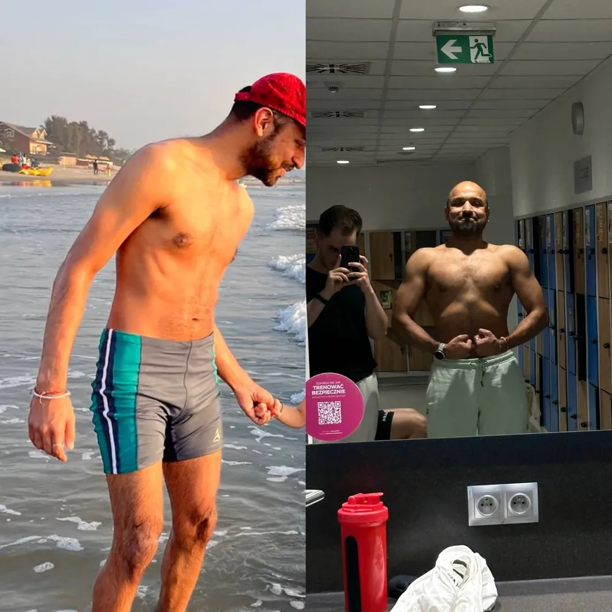
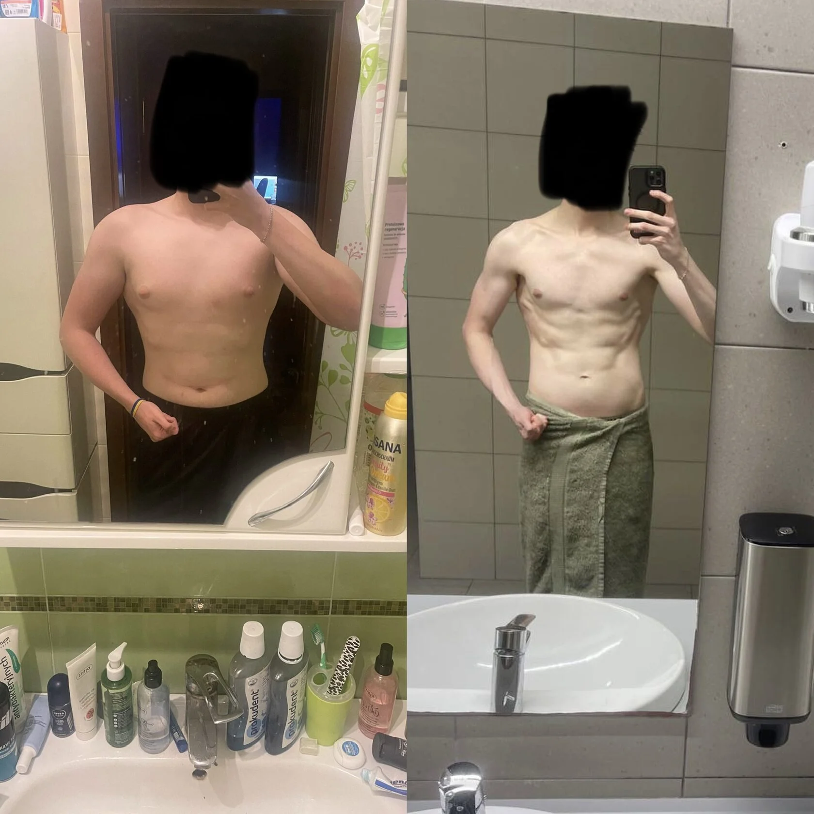
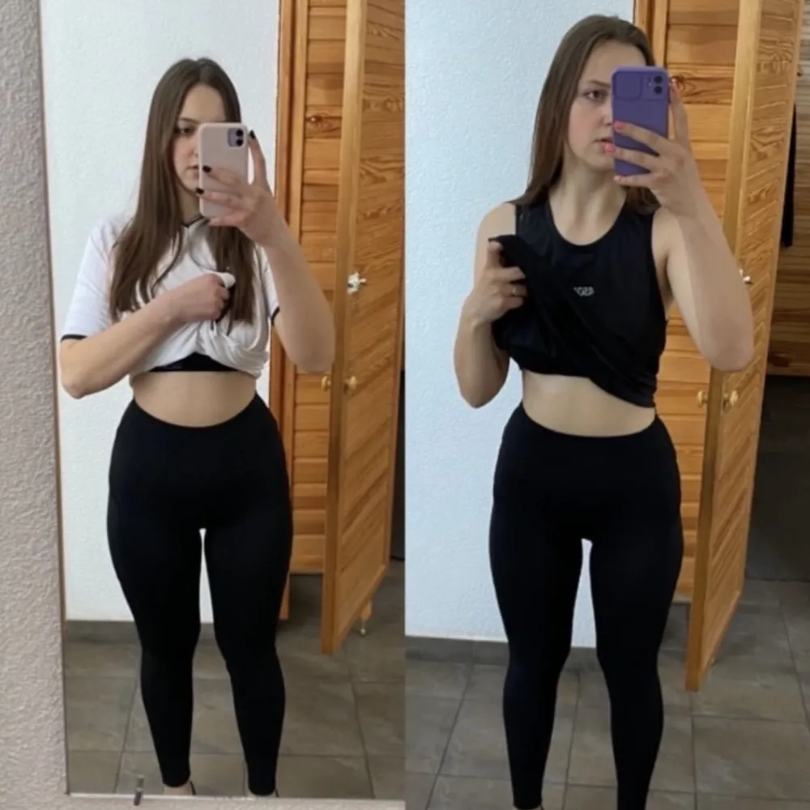
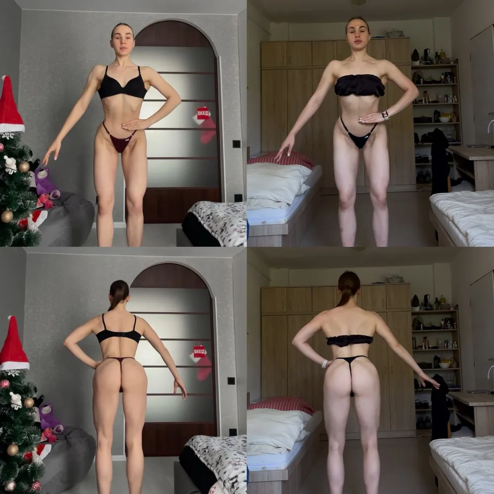
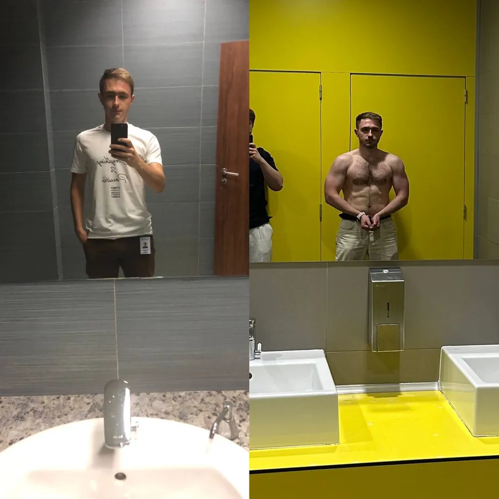
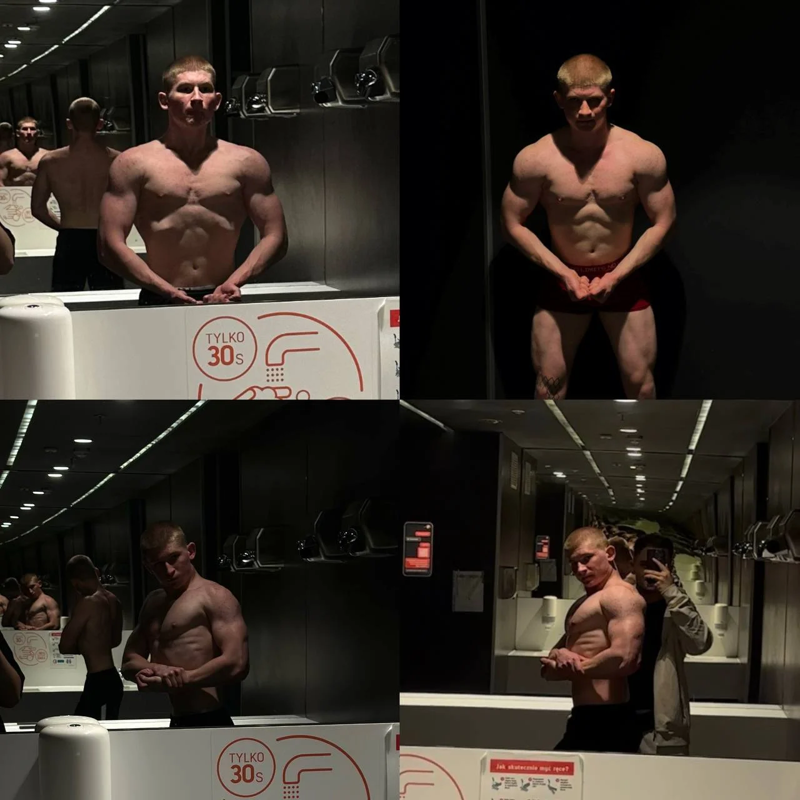
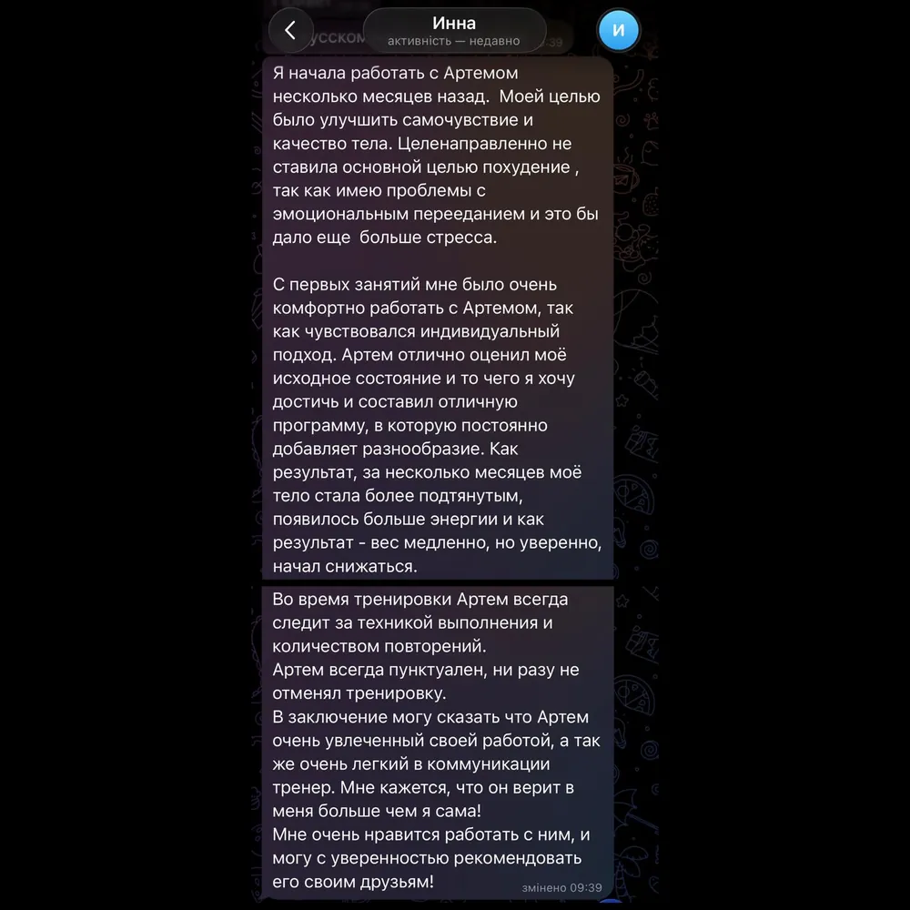
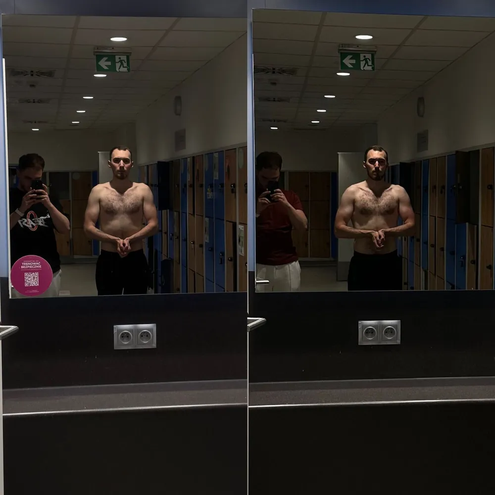
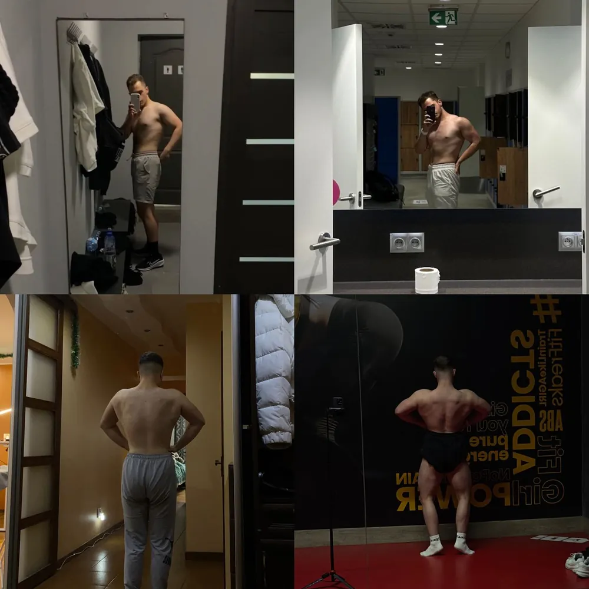

Разные цели. Разный исходный уровень. Разные ограничения. Один принцип — индивидуальная система.
Каждый кейс: исходная ситуация и ограничения → цель → стратегия и процесс → результат и срок.









Заполните анкету — я свяжусь с вами лично и разберу вашу ситуацию.
Перед началом работы мы проводим короткую бесплатную консультацию: определяем вашу цель, исходную точку, подходящий формат и отвечаем на вопросы.
Если вы уже готовы начать — также можете сразу оставить заявку.
Анкета получена. Я свяжусь с вами лично.